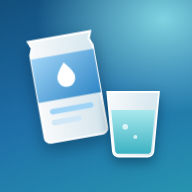

Чаще всего — вирусная кишечная инфекция
Рвоту и понос у детей обычно вызывают вирусы, например ротавирус или норовирус. Инфекция заразна и проходит сама. Антибиотики на вирусы не действуют.
У большинства детей прекращается за 3 дня.
У большинства детей проходит за 2 недели.
Особенно у малышей до года: они теряют воду быстрее. Поэтому лечение — раствор для питья и кормление.
Признаки обезвоживания
Если заметили хотя бы один — поите раствором активнее и смотрите раздел «Когда к врачу».
Кому обезвоживание грозит быстрее
Этим детям раствор нужен с первых часов болезни, а врача стоит позвать раньше:
- малыши до года, особенно до 6 месяцев;
- дети, родившиеся с низким весом;
- больше 5 раз жидкий стул за сутки;
- рвота больше 2 раз за сутки;
- ребёнок не пьёт или его рвёт после питья;
- малыш во время болезни перестал брать грудь;
- ребёнок плохо прибавлял в весе ещё до болезни.
Что делать
Главная задача — восполнить потерянную жидкость и не допустить обезвоживания.
Нужно
- Поить раствором для оральной регидратацииПорошок или готовый раствор из аптеки. Разводите строго по инструкции: не крепче и не слабее.
- Часто и понемногуМалышу до 2 лет — по чайной ложке каждые 1–2 минуты, из ложки или шприца без иглы, не из бутылочки. Старшим — маленькими глотками из чашки.
- Вырвало — подождать 10 минут и продолжатьЕщё медленнее, меньшими порциями. Рвота не значит, что поить нельзя.
- После каждого жидкого стула — дополнительная порция раствораСколько — по весу ребёнка в разделе «Сколько поить».
- Не прекращать кормлениеГрудь — чаще и дольше. Смесь — обычную, в обычном разведении, не разбавляйте сильнее.
- Едой не заставлятьКогда рвота стихла и появился аппетит, возвращайте ребёнку его обычную еду.
Не нужночто делать не нужно
- Давать лекарства «от поноса» и «от рвоты» без врачаСредства, которые замедляют работу кишечника, детям при кишечной инфекции не показаны.
- Давать антибиотики без назначения врачаВирусную инфекцию они не лечат.
- Заменять раствор соком, газировкой, сладким чаем или бульономСоки и газировка могут усилить понос. Вернуть их можно, когда понос прекратится.
- Держать ребёнка на голоде или поить только водой
- Самим переводить на лечебную смесьБезлактозную или другую лечебную смесь подбирает врач.
Это главное правило. Объём по весу — в калькуляторе ниже.
Сколько поить: объём по весу
Укажите вес и возраст — памятка посчитает, сколько раствора давать после каждого жидкого стула и сколько нужно, если врач разрешил лечить лёгкое обезвоживание дома.
После каждого жидкого стулав дополнение к обычному питью и кормлению
Лёгкое обезвоживаниежажда, беспокойство, суховатые губы — и врач разрешил лечение дома
Таблица: раствор после каждого жидкого стулапо весу
| Вес ребёнка | Раствор после каждого жидкого стула |
|---|---|
| до 5 кг | 50 мл |
| 5–10 кг | 100 мл |
| 10–20 кг | 200 мл |
| больше 20 кг | 300 мл |
Чайная ложка — 5 мл, стакан — 200 мл. Малышам удобнее всего давать шприцем без иглы.
Отмечайте стул, рвоту и питьё
Одно нажатие — одна запись. Памятка посчитает, сколько было за сутки, сколько раствора выпито и сколько нужно, и подскажет, когда пора к врачу. Записи хранятся только на вашем телефоне.
У каждого ребёнка свой вес, возраст и записи — удобно, если болеют несколько детей.
Все записи
Сводка для врача
Добавьте записи — сводка появится здесь.
Когда к врачу и в скорую
103 Звоните сразу
Не дожидаясь утра, если:
- Ребёнок вялый, сонный, его трудно разбудить — или он необычно раздражительный, не успокаивается
- Кожа бледная или «мраморная», руки и ноги холодные
- Дышит часто или тяжело
- Глаза запавшие, рот и язык сухие, плачет без слёз, давно сухой подгузник
- Не удерживает даже маленькие порции жидкости
- Рвота зелёного цвета
- Кровь в стуле
- Сильная или постоянная боль в животе, живот вздутый или твёрдый
- Сыпь, которая не бледнеет при надавливании стаканом
- Ребёнку трудно наклонить голову к груди; у малыша выбухает родничок
- Малышу меньше 3 месяцев и температура 38 °C и выше
Врач в тот же день
Позвоните в поликлинику или вызовите врача на дом, если:
- Ребёнку 3 месяца и больше и температура 39 °C и выше
- Малышу меньше 6 месяцев или он родился с низким весом
- Ребёнку до года, и за сутки больше 5 раз жидкий стул или больше 2 раз рвота
- Отказывается пить раствор или его рвёт после каждого питья
- В стуле слизь
- Лечили лёгкое обезвоживание 4 часа, а признаки остаются
Запишитесь к врачу
- Рвота продолжается дольше 3 дней
- Понос продолжается дольше 7 дней
Как не заразить других
Дома
- Мойте руки с мылом тёплой проточной водой и тщательно вытирайте — особенно после смены подгузника и перед едой.
- У ребёнка — своё полотенце; не давайте его другим.
- Отдельная посуда для больного ребёнка.
- Бельё стирайте при температуре выше 60 °C.
- Каждый день — влажная уборка; обрабатывайте горшок и туалет.
Сад, школа, бассейн
- В сад и школу — не раньше чем через 48 часов после последнего жидкого стула или рвоты.
- В бассейн — не раньше чем через 2 недели после последнего жидкого стула.
Что спрашивают родители
«Можно ли кормить, если понос?»
Да. Грудное вскармливание не прерывают — прикладывайте чаще. Смесь дают обычную и в обычной концентрации. Старшим детям, когда рвота стихла и появился аппетит, возвращают их обычную еду. Голодные паузы не нужны.
«Почему нельзя просто поить водой или компотом?»
С рвотой и поносом ребёнок теряет не только воду, но и соли. Аптечный раствор восполняет и то и другое. Соки и газировка могут усилить понос — их лучше вернуть, когда стул наладится.
«Его рвёт от каждого глотка — может, не поить?»
Поить нужно, но очень маленькими порциями: по чайной ложке каждые 1–2 минуты. После рвоты сделайте паузу 10 минут и продолжайте ещё медленнее. Если не удерживает даже такие порции — это повод звонить 103.
«Нужен ли антибиотик?»
Чаще всего нет: рвоту и понос у детей обычно вызывают вирусы, на которые антибиотики не действуют. Нужен ли антибиотик, решает врач после осмотра.
«Надо ли переходить на безлактозную смесь?»
Обычно нет — ребёнок продолжает есть свою смесь. Лечебную смесь подбирает врач, если для неё есть причина.
Большинство детей справляются с кишечной инфекцией дома, если вовремя и правильно их поить.

Сохраните памятку на телефон
После первого открытия памятка работает без интернета — в очереди к кабинету, в дороге, без мобильной сети. Добавьте её на экран «Домой», чтобы открывать как приложение.
Поить, кормить и наблюдать
Если сомневаетесь — позвоните врачу. Вы знаете своего ребёнка лучше всех.